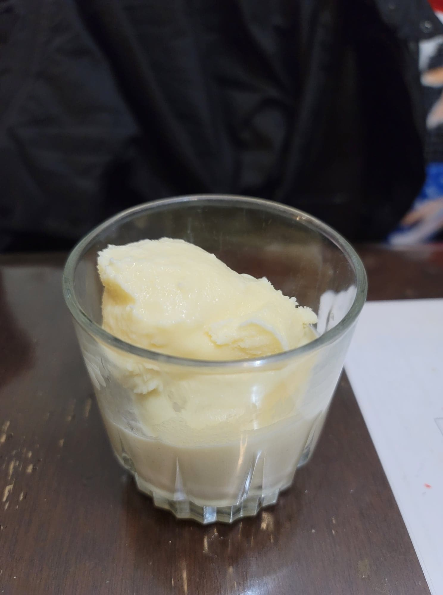

Vanilla Ice Cream

Ingredients:
- 1 1/2 cup Milk
- 1 1/2 cup Heavy cream
- 3/4 cup Sugar
- 1/4 tsp Salt
- 4 Egg yolks
- 1 tbsp Vanilla extract
Instructions:
- In a pot, combine the milk, heavy cream, salt and 1/2 cup sugar. Begin to heat over medium heat.
- In a separate bowl, whisk together the egg yolks and 1/4 cup sugar. As the milk mixture heats up, ladle some hot milk and whisk into the eggs to temper the eggs.
- Then pour the entire egg mixture into the milk while whisking constantly. Whisk over medium heat until the temperature reads 170 degrees Fahrenheit. Remove from heat immediately. Whisk in the vanilla and let chill completely in an ice bath or in the fridge.
- Once chilled, pour into an already churning ice cream maker. Let churn for about 40 minutes or until soft serve consistency. Then freeze in the freezer to firm up. Serve frozen.